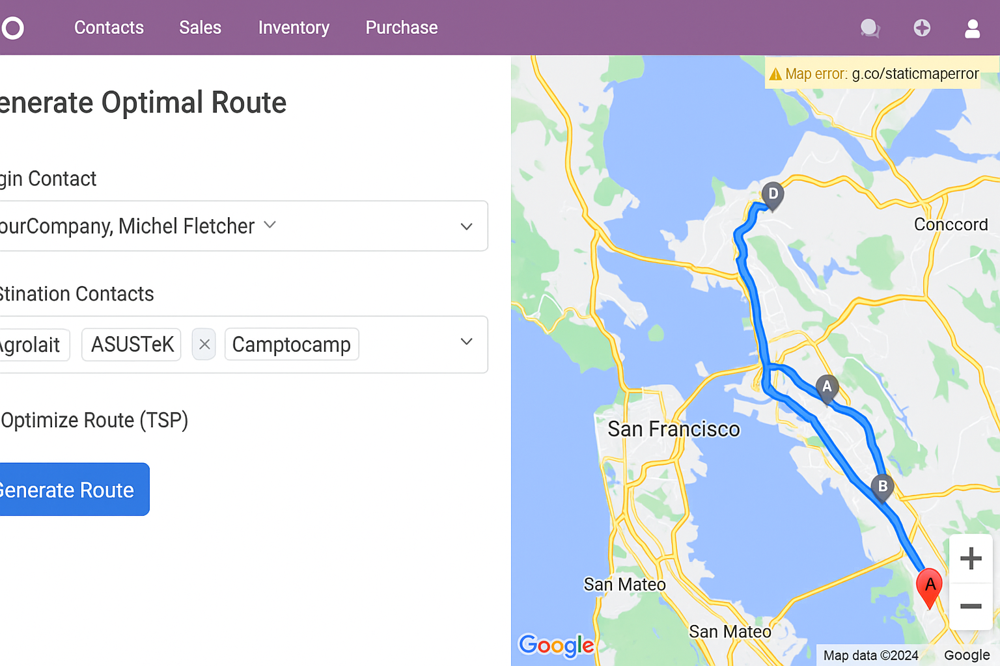

Ruta Optima
Contact usOptimize routes, save time and reduce logistics costs directly from Odoo.
Watch Detailed on YoutubeWhat is Ruta Optima?
An intelligent route planning and optimization module for distribution, sales and field services.
Automatic Optimization
Calculate the most efficient route using TSP heuristics (Nearest Neighbor + 2 opt).
Real-time Monitoring
GPS tracking integration to follow drivers and deliveries on the map.
Cost Reduction
Reduce fuel and travel time by planning optimal visiting sequences.
Module Screenshots & Installation Guide
Optimal Route
Optimize routes, save time and reduce logistics costs directly from Odoo.

Install Step 1 | Install the module
Install the module

General Settings | Integrations
Active the Odoo's Geo Locations

Permissions | Access rights
Enable this user group to allow selected users to generate optimized routes, view route histories, and access route-planning actions within Contacts, Sales, and Purchases

Generate Optimal Route | Contacts
Wizard that allows selection of origin and multiple contacts as destinations.

Contacts Selection View
Alternative view of contact selection and route options.

Alert Popup | Access to the Browser
This popup requests your browser’s permission to open external map links directly from Odoo.
Allowing this ensures that Google Maps routes can be launched safely and smoothly in a new browser tab..

Optimized Route Example
Map showing a successfully generated route with markers and path.

Non-Optimized Route Example
Since the 'Generate Optimal Route' option was not activated, the system displayed the locations exactly in the order the contacts were selected.
This results in a disorganized route that increases both travel time and operational costs

Route from Sales Orders
"Generate routes directly from Sales Orders and quotations to plan deliveries more efficiently.
This feature allows you to instantly organize all customer addresses associated with an order and create a complete delivery route without manual entry.
By centralizing route creation inside the sales workflow, businesses reduce planning time, avoid human errors, and ensure faster, more accurate deliveries

Route from Purchase Orders
Generate routes directly from Purchase Orders to plan supplier pickups and material collection with greater accuracy.
This feature organizes all supplier locations linked to a purchase order and creates a complete pickup route automatically.
By integrating route planning into the purchasing workflow, companies reduce coordination time, avoid unnecessary trips, and ensure faster, cost-effective supply replenishment

Route History | Menu
The Route History menu provides a complete record of all routes that have been generated and executed through the system..

Route History | Data
From this section, users can review every past delivery or pickup route, including key operational details that help improve logistics, auditing, and decision-making..

Advanced Features
- TSP-based route optimization (Nearest Neighbor + 2 opt)
- Integration with Contacts, Sales and Purchases
- Google Maps directions link generation with waypoints in optimal order
- Route history and auditing
- Permission management for route creation and viewing
Version 1.0.0
Release date: December 2025
Initial- Initial release of Ruta Optima module.
- Route optimization engine and Google Maps integration.
- History tracking and Sales/Purchase integration.